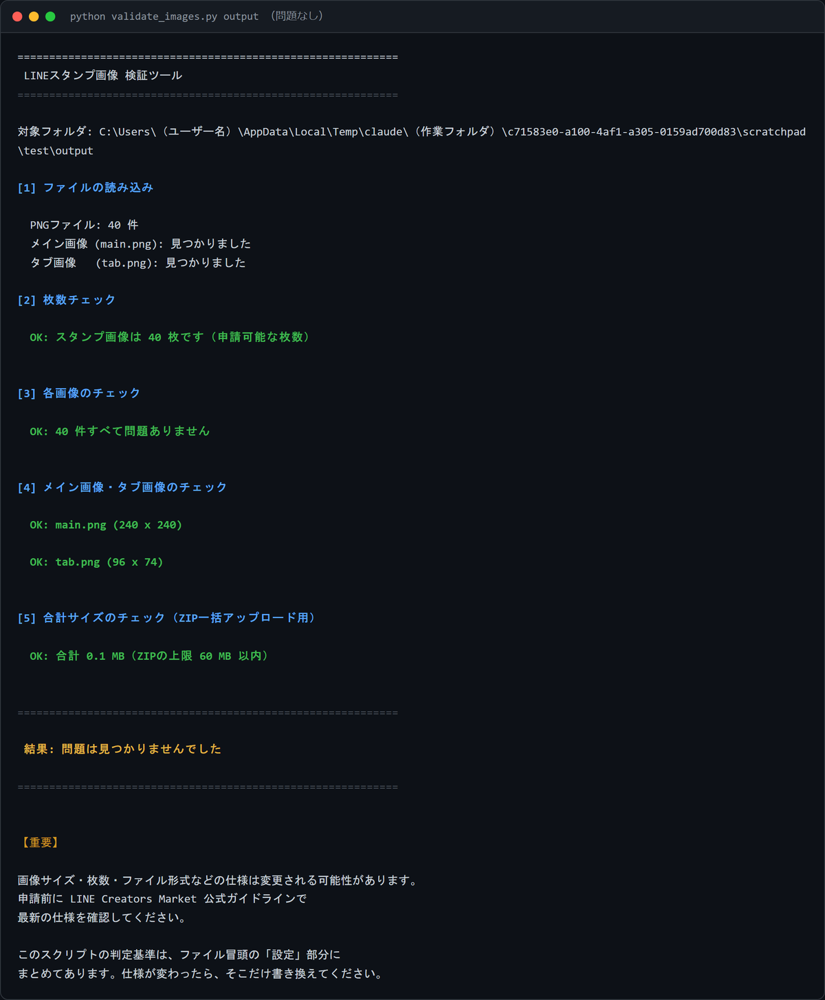
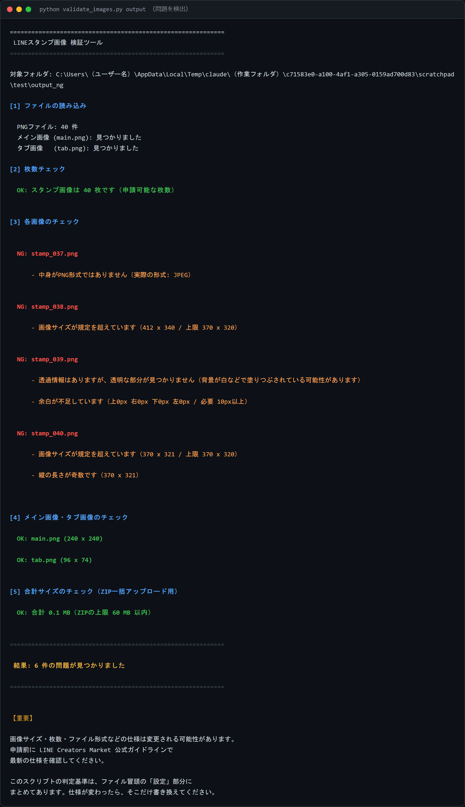

{kind=link}
{kind=link}
{kind=link}
{kind=link}
{kind=link}
{kind=link}
{kind=link}
{kind=link}
{kind=link}
{kind=link}
{kind=link}
{kind=link}
{kind=link}
{kind=link}
{kind=link}
{kind=link}
{kind=link}
{kind=link}
{kind=link}
{kind=link}
{kind=link}
Threads
案1 制作過程（販売前）約230文字
LINEスタンプを作っています。 キャラクターは「AIコンサルのアイナ」。 口ぐせは「それAIでいけるっしょ」です。 今日やったこと： ・セリフ40個を書き出した ・カテゴリー別に配分した（返事5個、確認4個…） 意外だったのは、「うれしい」より「了解」のほうが 圧倒的に使われるということ。 感情のスタンプを増やしても、実は使われないんですよね。 明日から画像を作ります。
note教材のサンプル画像とSNS投稿文を、コピー・ダウンロードできます
Codex ImageGen でキャラクターを生成し、ImageMagick で「背景透過 → 余白調整 → LINE仕様サイズ → 文字入れ（白フチ）」まで処理したものです。 すべて 370×320px・透過PNG・余白10px以上で、検証ツールの全項目を通過しています。
stamp_003.png
「ごめん！」／370×320
main.png
メイン画像／240×240
tab.png
タブ画像／96×74（顔だけ・横長）
自分のセリフを載せて試す用です。表示用に縮小しています。 白いTシャツを消さないため、-transparent ではなく flood fill で背景だけを抜いています。
文章だけでは伝わらない部分の図です。とくに透過と白フチは、実物を見ないと判断できません。
販売URLだけを貼る投稿は読まれません。制作過程・ボツ案・失敗談を見せる形にしています。
コピーボタンで、そのまま各アプリへ貼れます。
（URL）の部分は自分の販売URLに置き換えてください。
LINEスタンプを作っています。 キャラクターは「AIコンサルのアイナ」。 口ぐせは「それAIでいけるっしょ」です。 今日やったこと： ・セリフ40個を書き出した ・カテゴリー別に配分した（返事5個、確認4個…） 意外だったのは、「うれしい」より「了解」のほうが 圧倒的に使われるということ。 感情のスタンプを増やしても、実は使われないんですよね。 明日から画像を作ります。
LINEスタンプ制作、今日の失敗。 キャラクターの服を白いTシャツにしたんですが、 背景も白で生成していました。 背景を透明に抜こうとしたら、Tシャツも消えました。 対策：背景を薄いグレーで生成する。 これで境界が残るので、切り抜けます。 同じことをやりそうな人のために書いておきます。
LINEスタンプが販売開始になりました。 「AIコンサル アイナ」40個です。 （URL） 作ってみてわかったこと： ・絵が描けなくても作れる ・でもAIに丸投げでは完成しない ・いちばん時間がかかるのは加工 とくに透過の確認は、黒い背景に重ねないと できているかわかりません。 ここで1回リジェクトを受けました。 次は敬語版を作ります。
LINEスタンプのキャラクター初期案。 左が採用、右がボツ。 ボツにした理由は「頭身が高すぎる」。 スタンプは小さく表示されるので、 顔が大きい方が表情が読めます。 3頭身に変更しました。 #LINEスタンプ #生成AI
LINEスタンプ用に40枚生成しました。 コツは、キャラクター設定を毎回まるごと貼ること。 要約すると別人が出てきます。 面倒だけど、コピペなら3秒。 40枚ぶんの作り直しより速い。 #LINEスタンプ #AI画像生成
LINEスタンプ「AIコンサル アイナ」販売開始しました。 「それAIでいけるっしょ」が口ぐせの 陽気なコンサルタント、40個です。 （URL） 企画→キャラ設計→セリフ40個→生成→加工→申請。 全工程の記録はnoteに書きます。 #LINEスタンプ
絵が描けない人がLINEスタンプを作るまで。 キャラクターは「AIコンサルのアイナ」。 AIを使って仕事を効率化する、陽気なコンサルタントです。 ──────── 制作の流れ ──────── 1. テーマを決める 2. キャラクター設定を書く 3. セリフを40個作る 4. 画像を生成する（まず4枚だけ） 5. スマホで見え方を確認する 6. 残りを作る 7. 加工する（透過・文字入れ） 8. 申請する いちばん時間がかかったのは、7の加工でした。 生成は思ったより早く終わります。 いちばん大事だったのは、4の「まず4枚だけ」。 40枚作ってから顔が違うと気づくと、全部やり直しです。 スワイプして見てください → #LINEスタンプ #生成AI #AI活用 #スタンプ制作 #イラスト初心者 #ものづくり
LINEスタンプ、加工前と加工後。 やったことは4つだけです。 1. 背景を透明にする 2. 全体を少し縮小して余白を作る 3. セリフを入れる（太いゴシック体） 4. 文字とキャラクターに白いフチを付ける 4の白フチが、地味だけどいちばん効きます。 LINEのトーク背景は人によって違います。 暗い背景の人には、白フチがないと文字が読めません。 自分のスマホで確認して満足しないこと。 背景を黒に変えて、もう一度見てください。 #LINEスタンプ #画像加工 #生成AI #制作過程
LINEスタンプ「AIコンサル アイナ」販売開始しました。 「それAIでいけるっしょ！」が口ぐせの AI活用コンサルタント、アイナの40個セットです。 ──────── 入っているもの ──────── あいさつ 4 / 返事 5 / 感謝 3 / 謝罪 3 確認 4 / 仕事 5 / 感情 5 / 応援 4 締め 4 / アイナのネタ 3 仕事のグループトークでも、友だちとの雑談でも 使えるようにセリフを選びました。 とくに「了解っしょ！」「まかせて！」は 自分がいちばん使っています。 プロフィールのリンクから見られます。 次は敬語版を作ります。 どんなセリフが欲しいか、コメントで教えてください。 #LINEスタンプ #新作スタンプ #生成AI #AI活用
LINEスタンプ作ってみました。 「AIコンサル アイナ」っていうキャラクターです。 （URL） 「了解っしょ！」とか「まかせて！」とか、 返事系を多めに入れました。 もし使いそうだったら見てみてください。 使わなくても全然大丈夫です。
LINEスタンプ作ってます / AIコンサル アイナ
それ、自分で作ったスタンプなんです。 AIでキャラクターの絵を作って、 セリフは自分で40個考えました。 よかったら（URL） 作り方の記録もnoteに書いてるので、 興味あったら見てください。
公式の上限はタイトル40文字以内、説明文160文字以内です（2026年7月30日時点）。 以下はすべて上限内に収めています。
AIを使って仕事を効率化する、陽気なコンサルタント「アイナ」のスタンプです。 あいさつ、返事、確認、お礼、謝罪まで40個。 仕事のやりとりでも、友だちとのトークでも使えます。 「了解っしょ！」「まかせて！」「はい、時短！」 テンポよく返したいときに便利です。 同じキャラクターのシリーズを制作予定です。
「それAIでいけるっしょ！」が口ぐせの、 AI活用コンサルタント「アイナ」のスタンプです。 明るくて、面倒見がよくて、少しせっかち。 そんなアイナが、あいさつから返事、応援まで40通りの表情で登場します。 仕事のグループトークにも、友だちとの雑談にも。 一言返したいときに、ぜひ使ってください。
仕事のトークで、こんな場面はありませんか。 ・とりあえず「了解」と返したい ・急ぎの確認をやわらかく伝えたい ・遅れたことを軽く謝りたい AI活用コンサルタント「アイナ」の40個のスタンプが、 そんなやりとりを少し軽くします。 あいさつ／返事／確認／感謝／謝罪／応援／締め、 毎日使う言葉をそろえました。
Meet Aina, a cheerful AI consultant who loves saving time. 40 stickers for everyday chats and work conversations: greetings, replies, thanks, apologies, check-ins, and cheers. Quick to answer, easy to send. More stickers in this series are on the way.
"Let AI handle it!" - that's Aina's favorite line. Aina is a bright, caring, slightly impatient AI consultant. This set includes 40 expressions for daily and work chats. Say hello, say yes, say sorry, say thanks - in one tap.
LINE Creators Market 公式ガイドライン に記載されていた内容です。申請前に必ず最新の記載を確認してください。
| 種類 | 必要数 | サイズ |
|---|---|---|
| メイン画像 | 1個 | 横240px × 縦240px |
| スタンプ画像（選択式） | 8 / 16 / 24 / 32 / 40個 | 横370px × 縦320px（最大） |
| トークルームタブ画像 | 1個 | 横96px × 縦74px |
| 項目 | 内容 |
|---|---|
| ファイル形式 | すべてPNG形式 |
| 縦横のピクセル数 | 自動的に縮小されるため偶数にする |
| 解像度 | 72dpi以上 |
| カラーモード | RGB |
| 1個あたりのファイルサイズ | 1MB以下 |
| ZIPでまとめる場合 | 60MB以下 |
| 背景 | 透過にする |
| 余白 | 外枠とコンテンツの間に10pxぐらい必要 |
| クリエイター名 | スタンプタイトル | スタンプ説明文 | コピーライト |
|---|---|---|---|
| 50文字以内 | 40文字以内 | 160文字以内 | 50文字以内（英数字のみ） |
| 種類 | 必要数 | サイズ | 形式 |
|---|---|---|---|
| メイン画像 | 1個 | 240 × 240px | .png（APNG） |
| アニメーションスタンプ画像 | 8 / 16 / 24個 | 320 × 270px（最大） | .png（APNG） |
| トークルームタブ画像 | 1個 | 96 × 74px | .png |
| パッケージタイプ | 必要数 | サイズ |
|---|---|---|
| 絵文字 | 8〜40個 | 180 × 180px |
| デコ文字（かなカナ/英数字）＋絵文字 | 273〜305個 | 180 × 180px |
| デコ文字（かなカナ）＋絵文字 | 169〜201個 | 180 × 180px |
| デコ文字（英数字）＋絵文字 | 112〜144個 | 180 × 180px |
リポジトリの scripts/validate_images.py を実際に実行した画面です。
目視では判別できない2項目（拡張子はPNGだが中身がJPEG／透過情報はあるが全部不透明）を検出します。

問題なしの場合
40枚＋メイン＋タブがすべて条件を満たした状態

問題を検出した場合
どのファイルに何の問題があるかを日本語で表示
python -m pip install Pillow python scripts\create_csv.py --output csv\stamp_list.csv python scripts\rename_images.py --input edited --output output python scripts\validate_images.py output
python3 -m pip install Pillow python3 scripts/create_csv.py --output csv/stamp_list.csv python3 scripts/rename_images.py --input edited --output output python3 scripts/validate_images.py output